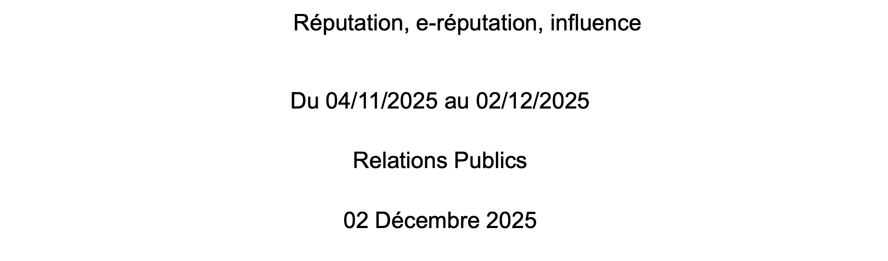

Mes projets

Analyse des besoins
Je souhaite vous présenter ce projet, car je l’ai trouvé particulièrement intéressant. Il m’a permis d’échanger avec certains participants ainsi qu’avec les organisateurs de la JPO afin d’identifier les points à améliorer et les éventuels manquements. Cette démarche m’a donné l’opportunité de proposer des pistes d’amélioration concrètes, qui ont pu être prises en compte pour l’édition de cette année, à laquelle j’ai également participé. Ce projet a donc été très enrichissant, tant sur le plan de l’analyse que de la mise en pratique, et m’a permis de développer mes compétences en communication, observation et amélioration continue.

Reprise d'un générique de série
Pour ce projet, l’objectif était de reproduire le générique d’une série, soit de manière quasi-identique, soit en le parodiant à notre manière. Il a été réalisé en groupe de quatre, et je trouve que nous avons très bien réussi. Chacune a pu apporter ses idées, et notre collaboration a été efficace et harmonieuse, ce qui a permis de créer un générique à la fois créatif et cohérent. Ce projet m’a permis de développer mes compétences en création audiovisuelle, travail en équipe et gestion de projet.

SAE Synthèse et bibliographie
Ce projet a été réalisé en groupe de trois. Je l’ai moins apprécié et je pense l’avoir moins réussi, notamment en raison de sa durée et de la charge de travail qu’il impliquait. Une grande partie consistait à rechercher et répertorier de nombreux documents, ce que j’ai trouvé assez long et parfois répétitif. Cependant, ce projet m’a tout de même permis de développer des compétences importantes, notamment en recherche d’informations, organisation et rigueur.